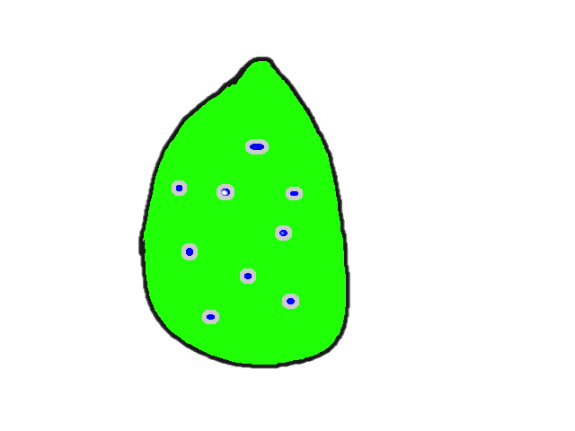
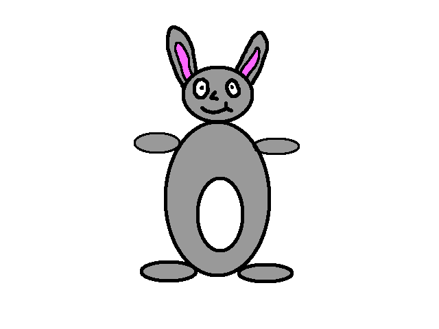
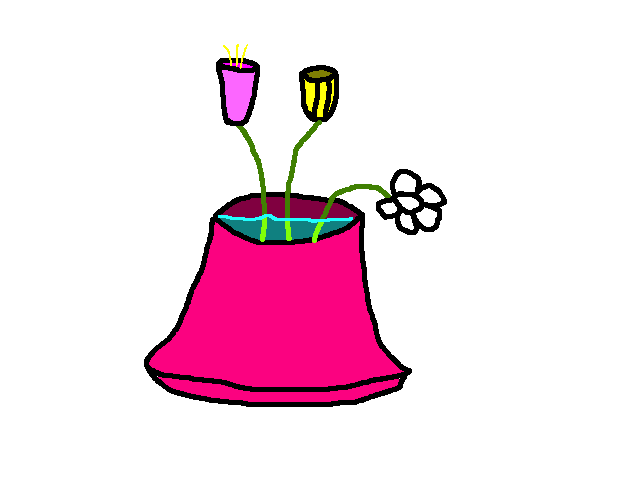
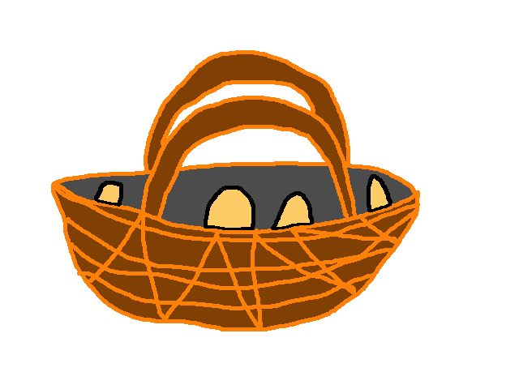
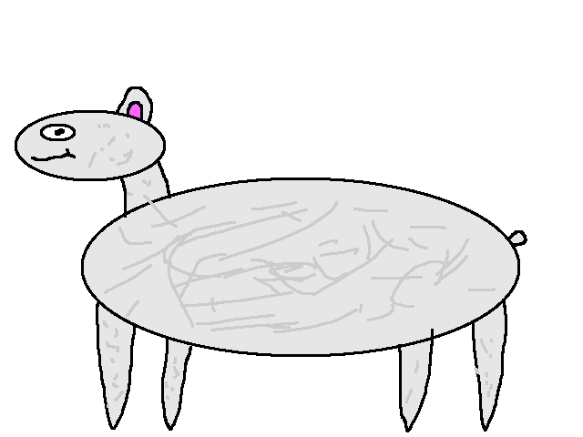

Niech te wyjątkowe Święta wypełnią Twój dom radością, miłością i wiosną w sercu. Życzymy pięknego czasu spędzonego z bliskimi, kolorowych jajek i słodkich niespodzianek.

Kolorowe jajka to najstarszy symbol Świąt Wielkanocnych.

Słodki zajączek przynosi prezenty i ukrywa jajka w ogrodzie.

Tulipany i narcyzy zwiastują wiosnę i nowe życie.

W Wielką Sobotę święcimy koszyczki pełne mazurków, jajek i kiełbasy – dawna tradycja trwająca od wieków.

Symbol pokoju i ofiary – nieodłączny element świątecznego stołu.